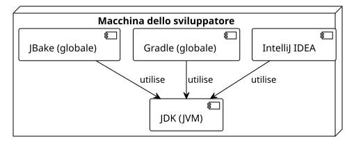

Articolo 0 : Impostazione dell'Ambiente per creare plugin Gradle
Publié le 22 September 2025
Pubblico di destinazione : Sviluppatori che desiderano lanciarsi nella creazione di plugin Gradle
Introduzione
Per sviluppare efficacemente i plugin Gradle, è indispensabile un ambiente di sviluppo ben configurato. Un buon setup ti farà risparmiare tempo, ridurrà le frustrazioni e garantirà la coerenza delle tue build.
-
Le JDK(Java Development Kit), poiché Gradle e JBake vengono eseguiti sulla JVM.
-
Un IDEmoderna (IntelliJ IDEA) con un buon supporto per Kotlin e Gradle.
-
Gradleegli stesso, per avviare i progetti.
-
JBake, il motore del nostro sito statico.

1. Il JDK : Il motore di Gradle
Gradle è un’applicazione che si esegue sulla Java Virtual Machine (JVM). Pertanto, l’installazione di un JDK è un prerequisito assoluto.
Quale versione scegliere?
È consigliato utilizzare una versione LTS (Long-Term Support) di Java. Al momento,JDK 17 ou JDK 21sono eccellenti scelte.
Installation via SDKMAN! (Consigliato)
SDKMAN! è uno strumento fantastico per gestire le versioni di molti SDK, inclusi Java e Gradle.
Installa SDKMAN!
curl -s "https://get.sdkman.io" | bash source "$HOME/.sdkman/bin/sdkman-init.sh"Installare una versione del JDK
# Pour lister les versions de Java disponibles sdk list java
# Pour installer Java 17 (par exemple, la distribution Temurin)
sdk install java 17.0.8-temVerificare l’installazione
java -versionDovresti vedere la versione che hai appena installato apparire.
2. L’IDE : IntelliJ IDEA
Per lo sviluppo di plugins Gradle con il DSL Kotlin,IntelliJ IDEAè lo strumento di scelta. La sua integrazione con Gradle e Kotlin è incomparabile.
-
Edizione Community :Gratuita e ampiamente sufficiente per iniziare.
-
Edizione definitiva :A pagamento, offre funzionalità avanzate per lo sviluppo web e il database.
Scarica la versione che preferisci dal sito di JetBrains: https://www.jetbrains.com/idea/download/
L’IDE rileverà automaticamente i vostri file`build.gradle.kts` et settings.gradle.kts, offrendoti un autocompletamento potente, la navigazione nel codice e strumenti di debug integrati.
3. Gradle : Lo strumento di build
Anche se ogni progetto utilizzerà la propria versione di Gradle tramite il Gradle Wrapper, è utile avere un’installazione globale di Gradle per attività come l’inizializzazione di nuovi progetti (gradle init)
Installazione via SDKMAN!
Proprio come per il JDK, SDKMAN! semplifica l’installazione di Gradle.
Installa Gradle
sdk install gradleVerificare l’installazione
gradle -vQuesto comando mostrerà le versioni di Gradle, Kotlin, Groovy e del JDK utilizzate.
4. JBake: Il generatore di sito statico
JBake è lo strumento che utilizzeremo per trasformare i nostri file sorgenti (come questo) in un sito web statico. Avere un’installazione locale è utile per visualizzare in anteprima le modifiche.
Installazione via SDKMAN!
Come per gli altri strumenti, SDKMAN! è il metodo più semplice.
Installare JBake
sdk install jbakeVerificare l’installazione
jbake -vQuesto comando visualizzerà la versione di JBake e le informazioni dell’ambiente Java che utilizza.
5. Il Gradle Wrapper: La buona pratica assoluta
Una volta creato il tuo progetto (che vedremo nell’articolo seguente), non dovresti più utilizzare il comando globale`gradle`. Al posto, lo utilizzeraiWrapper di Gradle(./gradlew), uno script incluso nel tuo progetto.
Perché?
-
Riproducibilità :Il Wrapper garantisce che ogni persona che lavora sul progetto (compreso il tuo server CI/CD) utilizzi esattamente lastessa versione di Gradle, eliminando così gli errori di build dovuti a ambienti diversi.
-
Semplicità :Non è necessario installare Gradle manualmente per contribuire a un progetto.
Basta clonare il repository e avviare`./gradlew`.
Un tipico comando avrà un aspetto simile a questo :
# Ne pas faire : gradle build
# À faire :
./gradlew build6. Docker e Portainer: per dei Builds riproducibili (opzionale)
Anche se non strettamente necessari per scrivere un plugin, Docker e Portainer sono strumenti DevOps moderni che facilitano notevolmente la creazione di build riproducibili e la gestione del tuo ambiente.
Installazione di Docker Engine
Docker ti permette di impacchettare la tua applicazione e le sue dipendenze in un contenitore.
Installare Docker tramite lo script ufficiale :
curl -fsSL https://get.docker.com -o get-docker.sh sudo sh get-docker.shGestisci Docker senza sudo (consigliato) :
Aggiungi il tuo utente al gruppo`docker`.
sudo usod -aG docker $USERdocker run hello-worldGestisci Docker con Portainer (GUI)
Portainer è un’interfaccia web leggera per gestire i tuoi container Docker.
Creare un volume per i dati di Portainer:
docker volume create portainer_dataAvviare il contenitore Portainer :
docker run -d -p 8000:8000 -p 9443:9443 --name portainer --restart=always -v /var/run/docker.sock:/var/run/docker.sock -v portainer_data:/data portainer/portainer-ce:latestPuoi ora accedere all’interfaccia di Portainer su`https://localhost:9443`.
Conclusione
Il tuo ambiente è ora pronto! Disponi di un JDK, dell’IDE più adatto, di Gradle e di JBake. Con l’aggiunta di Docker, Lei è anche pronto per creare build containerizzati e riproducibili. Questa base solida ti permetterà di concentrarti sull’essenziale: lo sviluppo di plugin potenti e utili.
Nel prossimo articolo, utilizzeremo il comando`gradle init`per generare la struttura del nostro primo progetto di plugin.
Articoli correlati
14 May 2026